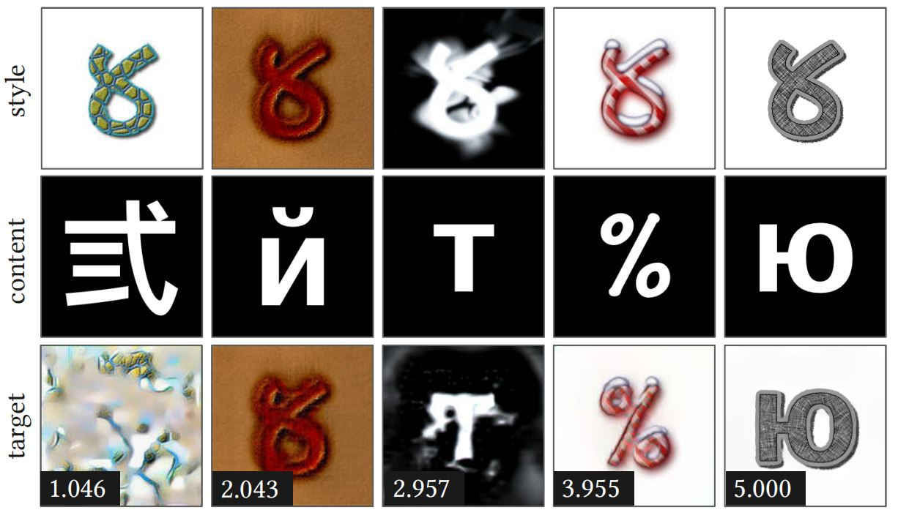
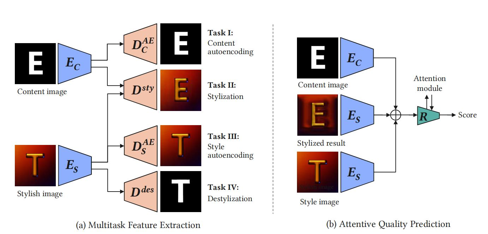
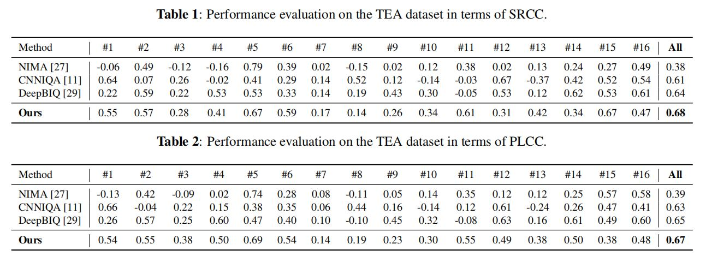
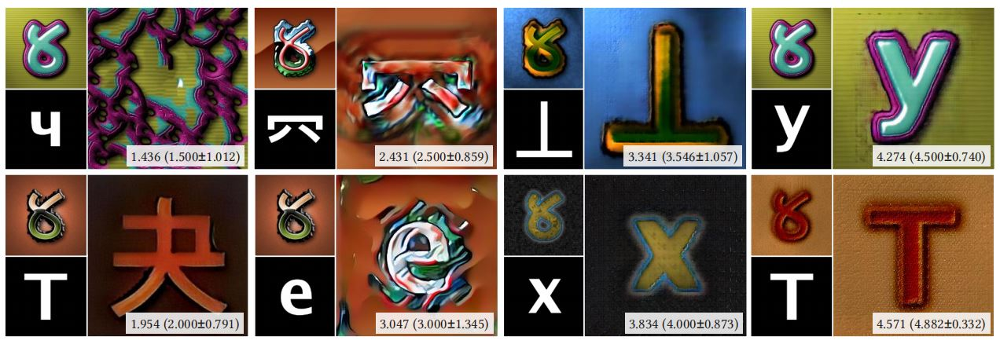

Multitask Attentive Network For Text Effects Quality Assessment

Figure 1. Representative examples of different MOS in TEA dataset. From top to bottom: reference style image and content image, text effects transfer results with their average quality scores in the bottom left.
Abstract
Along with the fast development of image style transfer, large amounts of style transfer algorithms were proposed. However, not enough attention has been paid to assess the quality of stylized images, which is of great value in allowing users to efficiently search for high quality images as well as guiding the designing of style transfer algorithms. In this paper, we focus on artistic text stylization and build a novel deep neural network equipped with multitask learning and attention mechanism for text effects quality assessment. We first select stylized images from TE141K [1] dataset and then collect the corresponding visual scores from users. Then through multitask learning, the network learns to extract features related to both style and content information. Furthermore, we employ an attention module to simulate the process of human high-level visual judgement. Experimental results demonstrate the superiority of our network in achieving a high judgement accuracy over the state-of-the-art methods.
Framework

Figure. 2. Framework of the proposed multitask attentive network for text effects quality assessment.
Resources
Selected Results
Comparison of Previous IQA Methods. Correlation and accuracy values of our evaluations on the IQA models on the collected data are presented in Table 1 and Table 2, respectively. We report the evaluation performance for 16 style transfer models in Supplementary material and the overall performance on all these models. As shown in Table 2, NIMA [2], CNNIQA [3] and DeepBIQ [4] have 0.38 SRCC with 0.39 PLCC, 0.61 SRCC with 0.63 PLCC and 0.64 SRCC with 0.65 PLCC, respectively. By comparison, our method obtains 0.68 SRCC with 0.67 PLCC, outperforming the state-of-the-art methods.

Visual Evaluations In Fig. 3, we further show examples of representative MOS for visual evaluation. Fig. 3 suggests that our network could well characterize key factors such as the matching of style, the matching of glyph, bleeding artifacts and other artifacts in determining aesthetic qualities.

Figure. 3. Our predicted scores on examples of representative MOS of 1.5, 2.0, 2.5, 3.0, 3.5, 4.0, 4.5, and 4.9, respectively. The quality scores are shown at the bottom right of each image in form of y (m +- e), where y is our predicted score, m is the mean opinion score with its standard error e.
Reference
[1] S. Yang, W. Wang, and J. Liu. TE141K: Artistic text benchmark for text effects transfer. TPAMI, 2020.
[2] H. Talebi and P. Milanfar. NIMA: Neural image assessment. TIP, 2018.
[3] L. Kang, P. Ye, Y. Li, and D. Doermann. Convolutional neural networks for no-reference image quality assessment. CVPR, 2014.
[4] S. Bianco, L. Celona, P. Napoletano, and R. Schettini. On the use of deep learning for blind image quality assessment. SIVP, 2016.